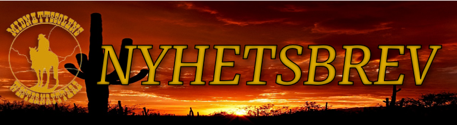
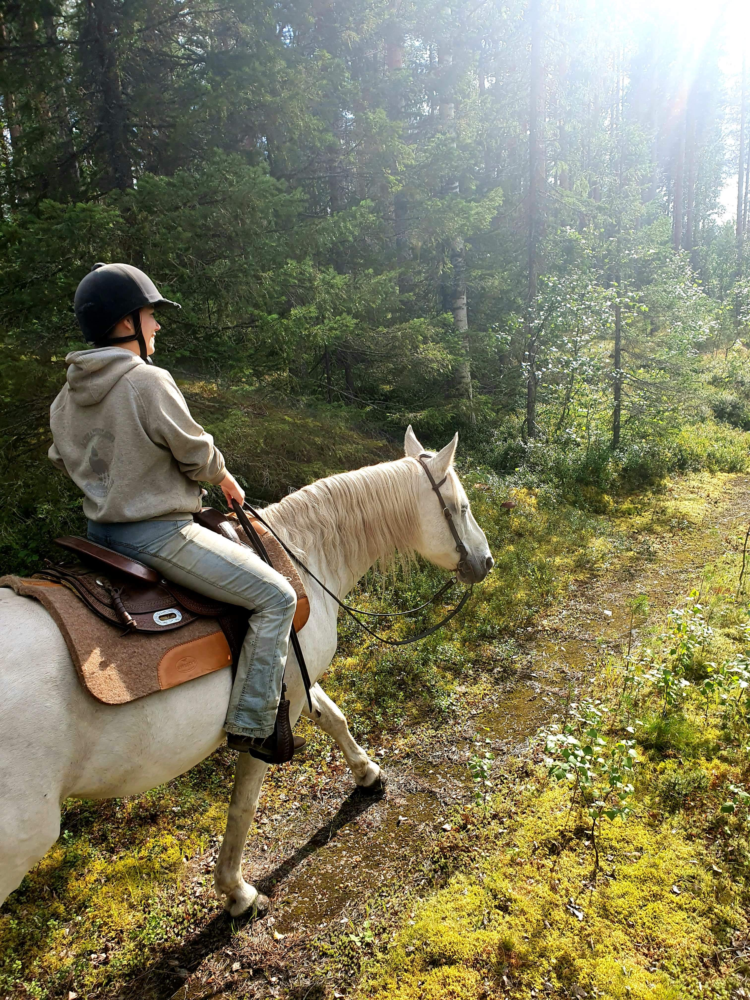
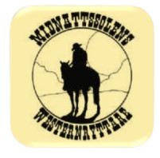
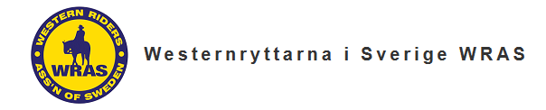
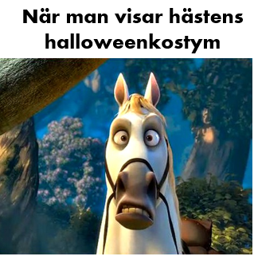

|
Nyheter från Midnattssolens Westernryttare. Ser brevet konstigt ut? View this email in your browser
|
|

|
Howdy alla westernryttare!
|
Kalender
|
|
Nu har gubben Höst stigit upp och påbörjat sin vandring genom Sverige. Fast tror ni verkligen han använder apostlahästarna? Själv tror jag han använder sig av en annan typ av hästar, kanske några gjorda i gulnade löv och som färdas med vinden?
Oavsett så är det skönt att hösten är här! Svalare luft, färre insekter och en sol som värmer alldeles perfekt när den kikar fram. Sen är det ju omöjligt att missa skådespelet i naturen. Mitt flöde på sociala medier exploderar med bilder på fyrbenta vänner som njuter av hösten. Det är så härligt att se!
Hösten betyder även Halloween!! En högtid som absolut kan firas i stallet. Karva lite pumpor, planera rysliga utklädnader och ge er ut på en spökvandring. Kanske syns vi ute i natten när klockan slår tolv?
Ta hand om er och spöka lugnt!
Text: Matilda Jägare Lindvall

Matilda Jägare Lindvall
Kassör
Midnattssolens Westernryttare
styrelsen@mswr.nu
|
- Lite tomt just nu men aktiviteter är under planering!
Följ oss på



|
|
Styrelsen informerar
Efter en fin tävlingshelg med nya norrlandsmästare arbetar vi i styrelsen i nuläget med att se över hur vi ska bedriva verksamheten under hösten. Vi har fått in förslag från medlemmar på aktiviteter, bland annat en kurs med Lars Lindvall som riktar sig till barn och ungdomar, och arbetar för att genomföra dessa.
Styrelsen har även skickat två representanter från MSWR, Matilda Jägare Lindvall och Lars Lindvall, för att delta på WRAS föreningsmöten som är nu under hösten. På dessa möten kommer MSWR bidra med sin bild av WRAS och hur föreningen kan arbeta för att stärka Westernridningen i norra Sverige.
Vill ni anordna en aktivitet eller har idé på aktivitet, hör av er till styrelsen så hjälper vi er att genomföra den!
|

Nyheter från WRAS
WRAS (Western Riders Association of Sweden) är MSWR:s förbund och samlar alla westernföreningar i Sverige. På WRAS hemsida kan man läsa mer om organisationen och nyheter för Western Sverige.
Just nu söker WRAS medlemmar till deras styrelse. Känner ni någon som vill bli mer aktiv inom westernridningen i Sverige? Då kan man nominera kandidater fram till 26/9. Detta gör man genom att skicka ett mejl till valberedning@wras.se. Mer information finns på WRAS Facebook sida.
Under hösten kommer även två föreningsmöten hållas där klubbar anslutna till WRAS kommer mötas och få höra hur WRAS arbetar samt vara med och påverka.
Nyhetsbrevets meme

|